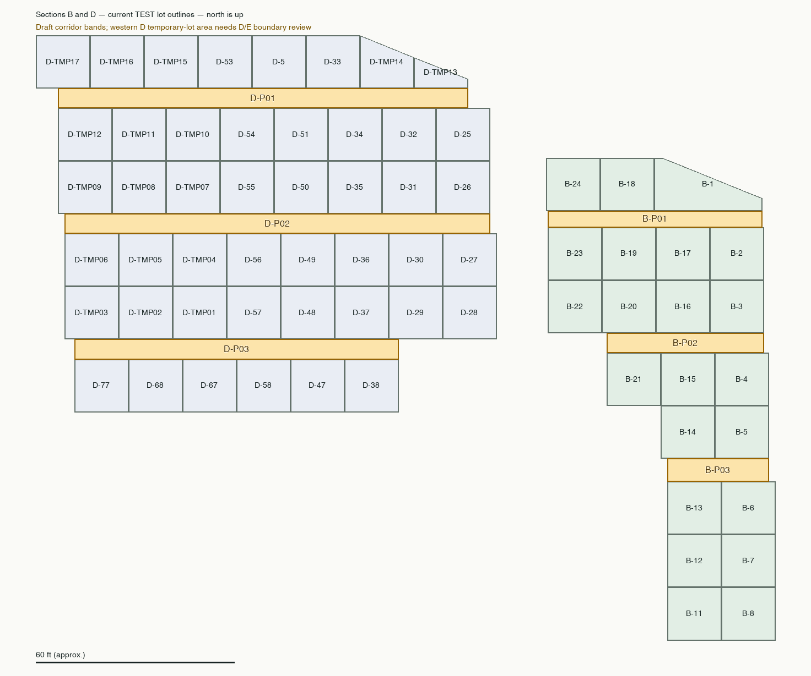

Read-only extension of the initial A/C review. Draft identifiers run north to south within each section. Together with A-P01 and C-P01–C-P03, this creates an initial cemetery-wide proposal of ten passageways. No map, registry, geometry, ownership or assignment records have been changed.
Existence and burial use are separate questions. B and D each have three visible gaps between lot rows. No mapped gravesite representative points or monument points were found in the proposed B bands. The broad D bands contain seven gravesite representative points and five monument points outside lots, but six of those gravesites are recorded as Section E. The western D lot layout contains estimated temporary, non-burial lots. Confirm that boundary and the corridor extents before assigning any E records to D.

| Draft ID | Map location | Gravesite point candidates outside lots | Monument point candidates outside lots | Interpretation |
|---|---|---|---|---|
| B-P01 | Northern gap: B-24/B-18/B-1 row to B-23/B-19/B-17/B-2 row. | 0 | 0 | No point candidates found; burial use remains unverified. |
| B-P02 | Middle gap: B-22/B-20/B-16/B-3 row to B-21/B-15/B-4 row. | 0 | 0 | No point candidates found; burial use remains unverified. |
| B-P03 | Southern gap: B-14/B-5 to B-13/B-6. | 0 | 0 | No point candidates found; burial use remains unverified. |
| D-P01 | Northern gap, including D-53/D-33 row to D-54/D-51/D-34/D-32/D-25 row. Western extension is adjacent to provisional TMP lots. | 3 | 3 | All three gravesite candidates are recorded as E; review provisional western layout and boundary. |
| D-P02 | Middle gap: D-55/D-50/D-35/D-31/D-26 row to D-56/D-49/D-36/D-30/D-27 row, with a provisional western extension. | 4 | 2 | One gravesite candidate is recorded as D; three are recorded as E. Review individually. |
| D-P03 | Southern gap: D-57/D-48/D-37/D-29/D-28 row toward D-77/D-68/D-67/D-58/D-47/D-38 row. | 0 | 0 | No point candidates found; burial use remains unverified. |
Counts use ST_PointOnSurface for an active gravesite polygon and the stored point for an active monument, inside approximate corridor bands and outside active lots. Gravesite candidates are selected spatially across Trinity, regardless of their recorded section. A section-only filter would have missed six E records in the proposed D bands. Grave and monument counts refer to different entities and must not be added as burial counts.
Some estimated gravesite footprints extend into the gaps even when their representative point remains in a lot. There are 1, 3 and 3 such footprint intersections in the three B bands. These intersections are not proof of passageway burial. The same distinction applies to D. Records near corridor ends may be excluded by these draft bounds.
The one candidate whose record identifies Section D is TLC-GPS-0453-02, about 0.9 feet outside D-30. Its associated monument is TLC-HS-0453; that monument point itself is not in the proposed corridor band. All seven candidate gravesite geometries are currently classified as estimated.
| Draft corridor | Gravesite map ID | Recorded section | Nearest mapped lots |
|---|---|---|---|
| D-P01 | TLC-GPS-0504 | E | D-54 (0.02 ft); D-53 (5.98 ft) |
| D-P01 | TLC-GPS-0517 | E | D-TMP16 (1.16 ft); D-TMP11 (4.84 ft) |
| D-P01 | TLC-GPS-0518 | E | D-TMP11 (1.43 ft); D-TMP16 (4.57 ft) |
| D-P02 | TLC-GPS-0453-02 | D | D-30 (0.9 ft); D-31 (5.1 ft) |
| D-P02 | TLC-GPS-0568 | E | D-TMP06 (1.35 ft); D-TMP09 (4.65 ft) |
| D-P02 | TLC-GPS-0569 | E | D-TMP06 (2.75 ft); D-TMP09 (3.25 ft) |
| D-P02 | TLC-GPS-0570 | E | D-TMP09 (0.45 ft); D-TMP06 (5.55 ft) |
| Draft corridor | Monument map ID | Linked gravesite points inside lots | Linked gravesite points in this corridor outside lots |
|---|---|---|---|
| D-P01 | TLC-HS-0511 | 1 | 0 |
| D-P01 | TLC-HS-0517 | 0 | 1 |
| D-P01 | TLC-HS-0519 | 1 | 0 |
| D-P02 | TLC-HS-0520 | 1 | 0 |
| D-P02 | TLC-HS-0570 | 0 | 1 |
Three of the five monuments link to gravesites whose representative points remain inside existing lots. The other two link to E-labelled gravesites in the draft corridor bands. A monument point alone does not establish a passageway deed or grave assignment.
No B- or D-specific passage allocation has been confirmed in this review. The 2017/2022 crosswalk remains proposed evidence for A/C; do not transfer those references to B/D based on repeated lot numbers or a surname match. The database's historical section notes say that, as of 2024, no passageway deeds were recorded for B or D; they describe three B passageways and note underground utilities in some of them. That historical statement does not prove the areas are physically empty or describe current ownership.
The western D TMP lots are explicitly temporary, estimated and restricted as non-burial in ADRs 0102–0105. Their present geometry must not be treated as final evidence of the D/E section boundary.
Recommended status for these six proposed passageways: identified from map layout; burial use not verified. Keep a separate review flag for D/E placement, and preserve current section assignments until resolved.